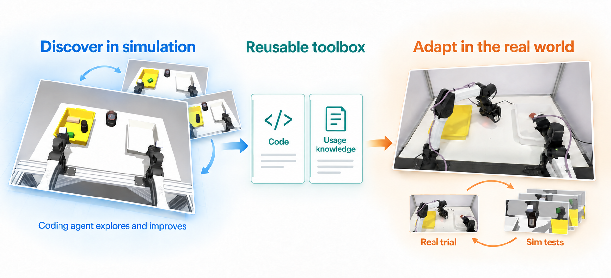

Coding agents are good at reasoning about goals in the digital world, but bringing them onto robots has been hard. Writing a policy in one shot fails because the model does not understand the robot or the physics well enough, and iterating directly on hardware is slow, costly and unsafe. SimEX uses simulation as the laboratory. In Stage 1 a coding agent runs open-ended probe-and-optimize cycles in a simulated sandbox, inventing its own tasks and building a reusable robot toolbox. In Stage 2 it adapts that toolbox to the real robot with only five physical trials, replaying each trial in simulation to diagnose the failure and screening several candidate repairs before spending the next trial. No demonstrations, no hand-written skills, and about ten minutes of robot time per task.

Real-world qualitative results
Real-world rollouts of the adapted toolbox on the physical dual-arm YAM robot. All clips are shown at 8× speed.
Barcode scanning · Rollout 1
Barcode scanning · Rollout 2
Plate to tote · Rollout 1
Plate to tote · Rollout 2
Two-fold towel task · Rollout 1
Two-fold towel task · Rollout 2
Real-world qualitative results
None of the behaviors below were specified. They emerged from the agent's own probe-and-optimize cycles in simulation and its repairs after real trials.
Zero-shot generalization. The scanning skill generalizes to unseen objects in a zero-shot setting.
Bottle at the tote edge. The robot figured out how to pick up objects at the edge of the tote by aligning its gripper with the tote’s orientation and gently nudging the tote.
Flipping a box. When the label is on the other side, the agent learned to flip the object in the tote and scan it again.
Recovery during scan and transfer. The agent is robust to failures and can recover from them.
Real-world qualitative results
The same toolbox, a new instruction. Here we change the task at deployment time and let the coding agent write a fresh program against the toolbox it built.
“Scan two objects and place them in the destination tote.”
“Scan one object and place it in the destination tote.”
“Leave one plate on the table.”
“Place the red plate in the tote.”
“Fold the towel in half.”
Simulation
The controlled sim-to-sim experiments in the paper use an independently implemented simulator as the stand-in for the robot: Isaac Sim for barcode scanning and plate to tote, MJWarp Flex for towel folding. Below, two successful rollouts of the adapted toolbox on the held-out tasks of each family.